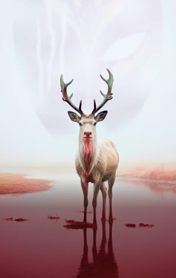

Мельник вам
расскажет
Истории из жизни и рассказы писателя Сергея Мельникова.
Об авторе
Сергей Валерьевич Мельников - современный российский писатель. Он заслужил признание благодаря своим произведениям в жанре хоррор, фантастике и автофикшн.
Сергей Валерьевич Мельников родился 24 апреля 1975 года в Севастополе. Одним из самых известных фантастик Сергея Мельникова можно назвать "Медленный ад" (2022), который стал его дебютной работой. Этот триллер получил большое внимание читателей и литературной критики, и с тех пор Мельников продолжил радовать своих поклонников новыми произведениями.
Некоторые из них включают "Хозяин острова Эйлин-Мор" (2023), "«Сдохни, Борзов!». Федеральная программа «Свободный выбор»" (2021) и "Равки" (2023). В целом, Сергей Валерьевич Мельников является известным и уважаемым писателем в современной российской литературе. Его работы привлекают внимание своей остротой и глубиной.
- Равки
- не боги
- медленный ад
- хозяин острова эйлин - мор
- девушка с красными волосами
- африканеры в космосе. гибель ковчега “гроб зимбабве”
- однодневки. они только открывают дверь
- даже если вы немного за центнер...
- точка, ёжик и её натурщики
- ложадка тая и айдар-гора
- не задохнуться
- фазаны на винограднике
- рыцари арбузной дольки
- активировать синхрофазодром
- ревитализация: мечта о тепле
- служба спасения семьи
- Попаданка с тройней для ректора магической драконьей академии
- «Сдохни, Борзов!». Федеральная программа «Свободный выбор»
- а сбылось это...
- Дневник ненависти 1.0
- Воскрешение Торгунны
- Наш последний день
- мы будем гореть в аду вместе
- Некогда Юпитеру разбираться
- Вечная молодость
- Серый всадник
- Хранитель сна
- Гроб с саморезами
- Воскрешение Торгунны
- Девятилетний капитан
- Чертёнок с бамбуковым мечом
- Медленный ад. Такси в один конец
- серый всадник
- Воскрешение Торгунны
- Создатель и его беспокойное семейство
- Равки
- не боги
- медленный ад
- хозяин острова эйлин - мор
- девушка с красными волосами
- африканеры в космосе. гибель ковчега “гроб зимбабве”
- однодневки. они только открывают дверь
- даже если вы немного за центнер...
- точка, ёжик и её натурщики
- ложадка тая и айдар-гора
- не задохнуться
- фазаны на винограднике
- рыцари арбузной дольки
- активировать синхрофазодром
- ревитализация: мечта о тепле
- служба спасения семьи
- Попаданка с тройней для ректора магической драконьей академии
- «Сдохни, Борзов!». Федеральная программа «Свободный выбор»
- а сбылось это...
- Дневник ненависти 1.0
- Воскрешение Торгунны
- Наш последний день
- мы будем гореть в аду вместе
- Некогда Юпитеру разбираться
- Вечная молодость
- Серый всадник
- Хранитель сна
- Гроб с саморезами
- Воскрешение Торгунны
- Девятилетний капитан
- Чертёнок с бамбуковым мечом
- Медленный ад. Такси в один конец
- серый всадник
- Воскрешение Торгунны
- Создатель и его беспокойное семейство
Книги
Уникальный стиль
и полёт фантазии
С помощью своего уникального стиля и полета фантазии, Я погружу Вас в увлекательные миры, поражающие своей оригинальностью и таинственностью. Слова сотканы в зыбкую паутину сюжетов, раскрывающих перед нами самые невероятные миры и глубины человеческой души. В произведениях вы найдете, как открываются двери в неизведанные миры, полные загадок и чудес. Вы станете путешественником во времени и пространстве, проникающим в сокровенные уголки вселенной, где действительность смешивается с фантазией. Страницы книг оживут, словно краски на холсте, и заберут Вас в мир, окутанный магией и интригой.
Мельников – это писатель, способный воссоздать мир, полный фантастики и загадок, но в то же время близкий и понятный каждому читателю. Его произведения покоряют своим стилем и западают в душу, оставляя незабываемые впечатления и задавая новые вопросы о нашем месте в мире.
-
Городское фэнтези, мистика, триллеры
медленный ад
-
Социальная фантастика
сдохни, борзов!
-
Мистика, морские приключения, ужасы
хозяин острова, эйлин мор
-
Книги про вампиров, Мистика, ужасы
равки
равки
Сказочная тундра, малые народы, хранящие древние знания, судьбы, меняющиеся мгновенно и непонятно почему...